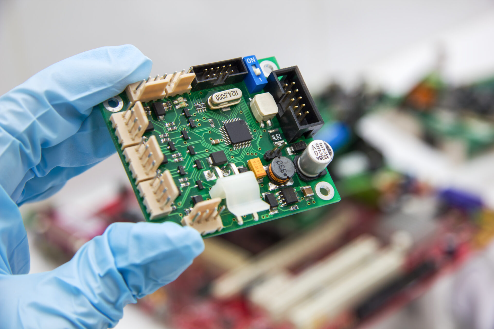

Computer Science Related Projects
C++ Projects
I have completed multiple classes in C++, and have completed projects testing my skills in them, such as various sorting algorithms.
HTML and CSS Projects
I have started working on multiple HTML and CSS webpages, including this one, and I plan on continuing to work and grow my skills in these topics.
Electrical Engineering Related Projects
Circuit related problems
Through my Electrical Engineering class work, I have gained experience with building and designing circuits.
VLSI Systems
I have started to learn about VLSI systems, and am very interested in continuing my knowledge around this topic. I also hope to complete more projects based in the world of VLSI


